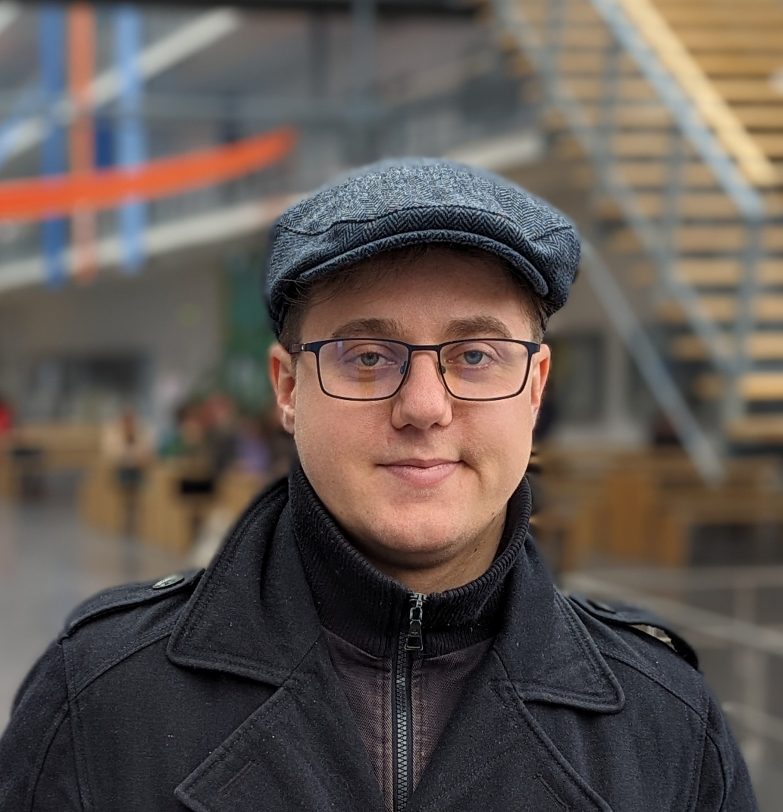

|  |
Csik Levente
Biography:
I studied at the Technical University of Munich between 2021 and 2024. I learned modern graphic programming techniques, 3D scanning, and deep learning / artificial intelligence development in 2021. I delved into Augmented Reality and game development in 2022. I implemented a serious game for Schön Klinik that helps visually impaired people by teaching them the use of monocular cues with the help of an Augmented Reality application with Hololens 2. I was working on an AR remote collaboration application that would allow experts to investigate machines remotely in 2023.
Between my bachelor's and master's studies in 2021, I worked as a front-end developer for Uniqa-Raiffeisen Software Services and I integrated additional features into the website of the Austrian Raiffeisen Bank.
I wrote my thesis on object-oriented programming and code quality control with the help of lint applications. I developed an extension for SonarQube that would allow the developers to control the code quality in additional scripting languages. To further understand my thesis topic, I studied design patterns and coding conventions for multiple programming languages such as Java, C++, C#, and Python.
Between 2017 and 2021 I studied at the Budapest University of Technology and Economics. I studied the principles of Assembly and C in 2017 and I learned how to model system architecture and coding in C++ and Java in 2018. I further developed my knowledge of algorithms and encoding techniques in 2019 and I studied cybersecurity and Android development in 2020. In the summer of 2020, I was working for Agrodat to automatize their error detection with an application written in Java.
I started programming in C# in 2015 during high school with a private tutor who taught me the basics of an object-oriented programming language. I completed a school leaving exam in informatics where I had to write programs in C# and apply changes to a website with HTML.
I got into programming with the Lego Robot and Mindstorm software during my high school years where I assisted in creating a simple robotic hand. I was introduced to Unity 3D Engine by my uncle Peter Vértesi and I became interested in the way games could be developed.
I love tea and Lord of the Rings.